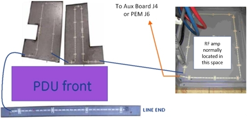
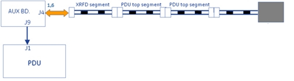
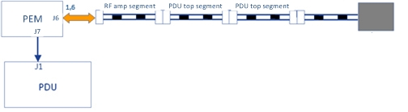
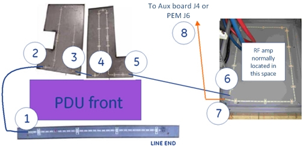
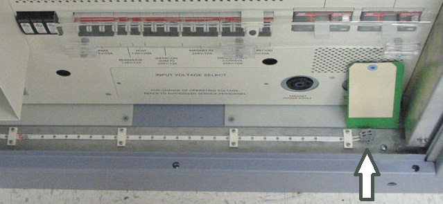
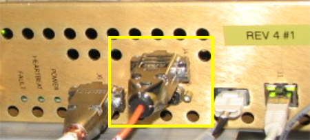
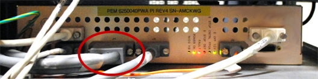
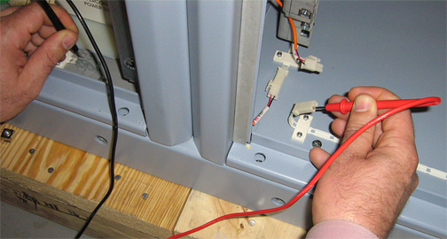
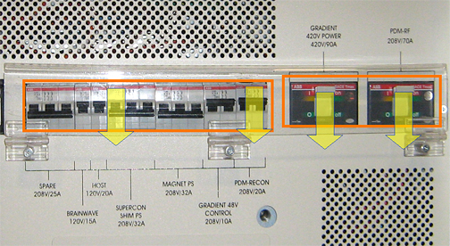
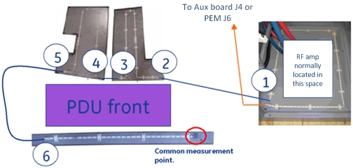

- 00000018WIA309A9030GYZ
- id_123749084.5
- Oct 31, 2022 5:58:10 AM
Leak detection sensor theory and troubleshooting
Theory
Leak detection consists of a series of cable segments positioned in different areas of the PGR cabinet and joined by interconnecting cables and connectors. Each cable segment is a two-conductor, ladder-line design whereby the parallel conductors are separated a set distance apart the length of the cable by an insulating dielectric. These cables are located in front of the PDU, above the PDU, and under the RF amplifier. They are interconnected as shown below.

The Auxiliary board or PEM connects to one end of interconnected string of cable segments and constantly measures the total line impedance. Any moisture on the line (from a leak, etc.) results in an impedance that causes the Auxiliary board or PEM to shunt trip the PDU main breaker, which removes power from the input of the PDU.
| DANGER | |
|---|---|


Opening any of the connections between line segments, however, causes the Auxiliary board or PEM to latch into failing state whereby an error is logged and scanning is inhibited. Opening a line segment does not result in PDU main breaker trip. Recovery from latched state is only possible by reconnecting segments and then cycling power to the Auxiliary board or PEM (Gradient 48V Control on front of PDU).
The terminating block contains a special diode so that the line measures as a continuous loop to the Auxiliary board or PEM.
Troubleshooting
Based on observed symptoms, refer to the appropriate troubleshooting section.
| Failure mode and symptom | Troubleshooting section |
| Failure mode 1 – PDU main breaker tripping | Failure mode 1 – PDU main breaker trip |
| Failure mode 2 – PDU main breaker tripping, lines dry. | Failure mode 2 – PDU main breaker trip, lines dry |
| Failure mode 3 – PDU leak sensor disconnect error; scanning inhibited, no main breaker trip. | Failure mode 3 – PDU leak sensor disconnect error; scanning inhibited, no main breaker trip |
Failure mode 1 – PDU main breaker trip
Refer to Cable Interconnections, and visually inspect for moisture on lines. LOTO incoming power to PGR cabinet and repair any leaks. Use absorbent material to thoroughly dry any moisture from above, below, and around leak detection lines.
Failure mode 2 – PDU main breaker trip, lines dry
| DANGER | |
|---|---|
- On the PDU, turn off the breaker labeled Gradient 420V Power.
- Disconnect each line detection segment in the order shown, and then reset the PDU main breaker. It is normal for a disconnect error to be logged when this is done.
Figure 4. Line segment check points 
- The point at which the breaker does not trip indicates a faulty line segment in the previous section.
- Replace or repair the faulty line segment.
- If all cables (including connection at location 8) are disconnected and the PDU main breaker is still tripping, then replace the Auxiliary board or PEM.
- Confirm reattachment of all circuit connectors.
- After replacement, cycle power to the Auxiliary board or PEM (Gradient 48V Control on PDU) to reset it from latched fault condition.
Figure 5. PDU main breaker location 
Failure mode 3 – PDU leak sensor disconnect error; scanning inhibited, no main breaker trip
There are several possible causes for this failure mode. Follow the steps in the sections below to determine the cause of the error.
Terminator connection
- Sometimes the terminator on the leak strip is bumped and disconnected when the PDU front cover is removed for service. It may appear connected when it is not.
Figure 6. Leak strip terminator 
- Verify that the terminator is connected by pushing down the tabs on top with a small screwdriver, and simultaneously forcing the wire into its opening.
Cable connections
- Check that the cable is attached at J4 on the Auxiliary board or at J6 on the PEM.
Figure 7. Auxiliary board J4 
Figure 8. PEM J6 
- Trace the other end of the cable and confirm that it is labeled Leak Sensor 1-A and is attached to end of leak detector segment routed in front of the RF amplifier.
Resistance checks
- Complete the resistance checks of leak sensor circuit to find the location of high impedance.
- Disconnect the cable connector inspected earlier and labeled Leak Sensor 1-A.
Figure 9. Doing resistance check 
- Use a digital multimeter to measure resistance from the terminal block contact to the corresponding connector conductor. You may need to swap measurement points at one end in order to locate the correct line.
- The resistance between two points on the same line should measure 10 ohms ± 10 ohms.
- Repeat the measurement on the opposite line, and confirm the same result.
- Disconnect the cable connector inspected earlier and labeled Leak Sensor 1-A.
- If both measurements are good, test the Auxiliary board or PEM.
- Reattach the leak detection cable connection in the front of the RF amplifier.
- From CSD Utilities, perform a Host PC shutdown. Confirm that the ICNs also shut down.
- Place all circuit breakers in the OFF (down) position.
Figure 10. Circuit breakers on PDU 
- Rotate main PDU circuit breaker (not shown) in the OFF position to remove input power from the PDU.
- Roll up the end of a paper towel and wet a 2 inch (5 cm) section with water.
- Wrap at least one turn of the moistened section of towel tightly around the exposed middle section of the leak detection line located in front of the PDU.
Figure 11. Leak detector 
- Rotate the main PDU circuit breaker in ON position to apply input power to PDU.
- Place the breaker labeled Gradient 48V Control on PDU in the ON (up) position. This will power on fans and the Auxiliary board or PEM.
- Wait 10 seconds for the PDU main breaker to trip.
- If the PDU main breaker trips, repair or replace the terminated leak detection segment (section that was tested) located in front of the PDU.
- If the PDU main breaker does not trip, retest the Auxiliary board or PEM. If the PDU main breaker still does not trip, replace the Auxiliary board or PEM.
- If a bad measurement is seen when doing the leak sensor circuit resistance checks, move to the next connection segment in the leak circuit. Keep repeating the measurement test at each segment, in the order shown below, until you locate the faulty connection. All measurements referenced to termination block.
Figure 12. Measurement points 
- Replace or repair the faulty connection.
- Confirm reattachment of all circuit connectors.
- If necessary, thoroughly dry the dampened section of the leak detect line.
- Cycle power to the Auxiliary board or PEM (Gradient 48V control on PDU) to recover it from latched fault condition.
- Any remaining PDU circuit breakers can now be put back in ON position.